Fonte: gare di altri paesi/India/biologia/INBO2025-Question.pdf · Apri PDF · apri PDF p.1
Cluster: Onde e Oscillazioni
Soluzioni (stessa cartella): · · · · · · · · · · ·
Problema 1
(1 point) tRNA is a single stranded molecule that folds into a clover-leaf like secondary structure. Which of the following factors play a role in its folding?
i. Hydrophobicity of the bases ii. Hydrogen bonding among the bases iii. Phosphodiester bonds iv. Temperature
Options: (A) i & ii only (B) ii & iii only (C) i, ii & iv only (D) iii & iv only
Topic: Modern-Quantum Physics, Thermodynamics Metodi: Physical Modeling, Superposition Principle Competenze: Physical Reasoning, Mathematical Modeling Fonte: Testo (PDF) — p.2
Problema 2
(1 point) When the ciliated tracheal epithelium in isolation is treated with a microtubule depolymerizing drug, which of the following observations is most likely to be made?
(A) The number of cilia per unit epithelial surface area will decrease. (B) The directional beating of the cilia will be lost. (C) Cilia will become rigid and beat randomly. (D) The cilia will reduce to 1/4th of its original size.
Topic: Newtonian Mechanics, Oscillations & Waves Metodi: Physical Modeling, Free-Body Diagram Competenze: Physical Reasoning, Diagrammatic Reasoning Fonte: Testo (PDF) — p.2
Problema 3
(1 point) The graph depicts the effect of different salt concentrations on the physical state of a bacterial DNA fragment. Select the most appropriate option that applies to this data.
(A) Increasing salt concentration increases the thermolability of the DNA strand. (B) Repulsion between like charges in DNA is more pronounced in condition P as compared to conditions Q and R. (C) Increasing salt concentration leads to increased hydrogen bonding between the DNA strands. (D) If one measures absorbance of the DNA strands at 260 nm, R is likely to show greatest absorbance at any temperature between 70–100°C as compared to P and Q.
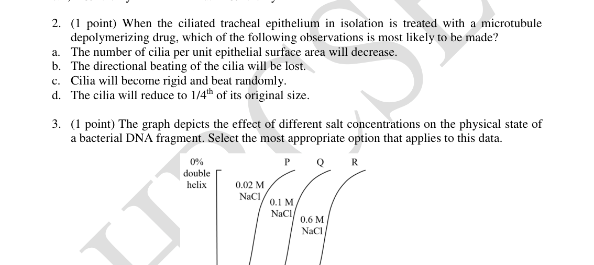
Effect of salt concentration on DNA meltingTopic: Electrostatics, Thermodynamics Metodi: Experimental Data Analysis, Graph Linearization Competenze: Physical Reasoning, Experimental Data Analysis Fonte: Testo (PDF) — p.2
Problema 4
(1 point) Amino acid glutamine is required for cancer cells to survive and proliferate. Enzyme glutaminase breaks down glutamine into glutamate and ammonia. Glutaminase was obtained from two different sources, S1 and S2. Their kinetic properties are shown in the graph. The arrow indicates the concentration of glutamine in the cell environment. Based on the kinetics, can any of these enzymes be considered for possible cancer treatment?
(A) Enzyme from S1 can be used more effectively for cancer treatment as it shows higher than S2. (B) Enzyme S2 is better for cancer treatment as it shows lower value for the substrate. (C) Both enzymes cannot be used as production of ammonia will be detrimental to the neighbouring normal cells. (D) Both enzymes are equally effective as both are active at concentrations found in the cell environment.
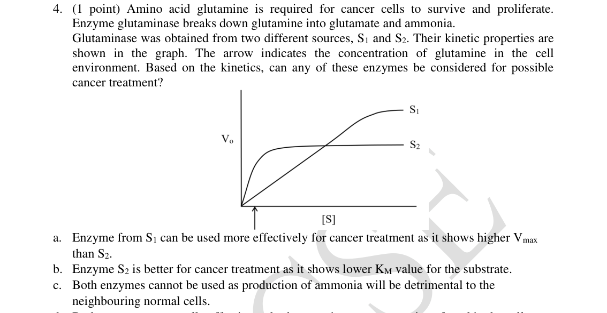
Enzyme kinetics curves S1 and S2Topic: Kinetic Theory, Thermodynamics Metodi: Experimental Data Analysis, Curve Fitting Competenze: Physical Reasoning, Experimental Data Analysis Fonte: Testo (PDF) — p.3
Problema 5
(1 point) Plants have constitutive leaf angles that are generally fixed and do not vary much among different growth environments. Several species however have the ability to actively adjust their leaf angles. Leaf angle is defined as the angle between the leaf blade plane and the horizontal plane. Which of the following condition is likely to decrease the leaf angle of a plant?
(A) Environmental stress such as temperature rise. (B) Environmental stress such as drought. (C) Sustained flooding leading to plant submergence. (D) Plants growing with dense canopy overhead.
Topic: Newtonian Mechanics, Thermodynamics Metodi: Physical Modeling, Free-Body Diagram Competenze: Physical Reasoning, Diagrammatic Reasoning Fonte: Testo (PDF) — p.3
Problema 6
(1 point) In an experiment, carbon dioxide labelled with radioactive carbon (CO) was supplied to a leaf of potted plant for a particular time interval. The pot was kept in a well-lit place during this experiment. After few hours, a transverse section (T.S.) of the stem (region just above the petiole attachment) was obtained and observed under a microscope as shown below.
The section was subsequently dried and exposed to an X-ray film in a dark room for a week. After development of the film, which one of the following patterns would be observed?
(A) [figure a] (B) [figure b] (C) [figure c] (D) [figure d]
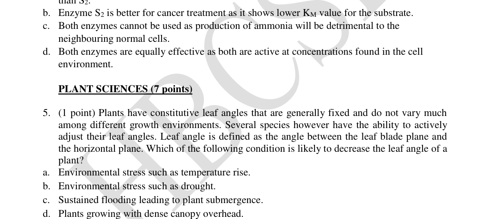
T.S. of stem under microscope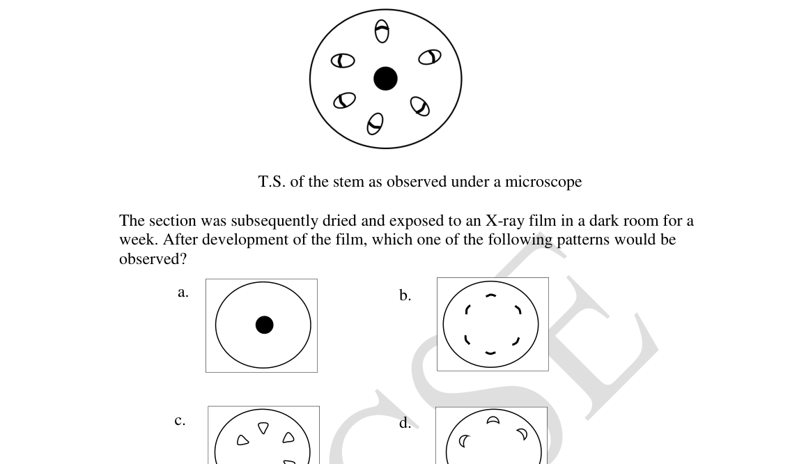
Autoradiograph pattern options a-dTopic: Modern-Quantum Physics, Nuclear & Particle Physics Metodi: Physical Modeling, Experimental Data Analysis Competenze: Physical Reasoning, Diagrammatic Reasoning Fonte: Testo (PDF) — p.3
Problema 7
(1 point) How many molecules of CO need to be fixed to complete one Calvin cycle and regenerate RuBP?
(A) 1 (B) 2 (C) 3 (D) 4
Topic: Thermodynamics, Modern-Quantum Physics Metodi: Conservation of Energy, Physical Modeling Competenze: Physical Reasoning, Mathematical Modeling Fonte: Testo (PDF) — p.4
Problema 8
(1 point) The observations regarding flowering in two plants Maryland mammoth tobacco plants (M) and Henbane Hyoscyamus niger (H) plants grown in artificially varying day and night lengths are shown below. The dashed vertical line indicates 14 hr.
| Plants M | Plants H | |
|---|---|---|
| a. | No flowering | Flowering |
| b. | No flowering | Flowering |
| c. | Flowering | No flowering |
| d. | Flowering | No flowering |
Based on the observations, select the correct option.
(A) Both M and H are short day plants. (B) M is a short day plant while H is a long day plant. (C) M is a long day plant while H is a short day plant. (D) M is a long day plant while H is a day neutral plant.
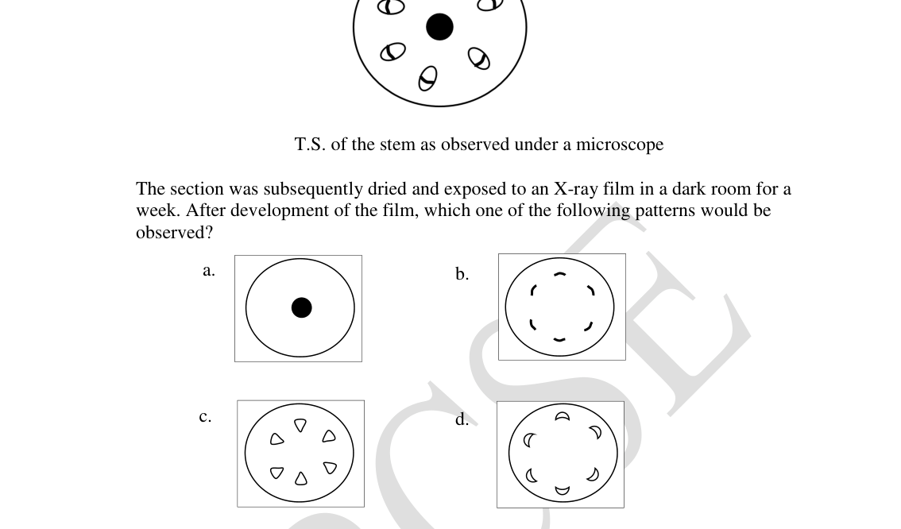
Photoperiod vs flowering chart M and HTopic: Oscillations & Waves, Thermodynamics Metodi: Experimental Data Analysis, Graph Linearization Competenze: Physical Reasoning, Experimental Data Analysis Fonte: Testo (PDF) — p.4
Problema 9
(1 point) Several mechanisms have evolved in plants that avoid self-pollination. In a plant, one such mechanism is seen in the growing pollen tube. If the incompatibility gene is expressed during the development of pollen tube, the style and stigma block further growth of pollen tube. This mechanism, operative between pollen tube and style-stigma, respectively is:
(A) haploid and diploid genome incompatibility. (B) diploid and diploid genome incompatibility. (C) haploid and haploid genome incompatibility. (D) diploid and haploid genome incompatibility.
Topic: Modern-Quantum Physics Metodi: Physical Modeling, Symmetry Argument Competenze: Physical Reasoning, Diagrammatic Reasoning Fonte: Testo (PDF) — p.5
Problema 10
(1 point) In Mirabilis plant, inheritance of leaf colour is due to plastids. If pollen grains from a variegated branch are used to pollinate the stigma of a flower from a green branch, it will result in plants with:
(A) only green leaves. (B) only variegated leaves. (C) green, yellow and variegated leaves (D) both green and variegated leaves.
Topic: Modern-Quantum Physics Metodi: Physical Modeling, Statistical Averaging Competenze: Physical Reasoning, Mathematical Modeling Fonte: Testo (PDF) — p.5
Problema 11
(1 point) Plasmodesmata are microscopic channels that connect adjacent plant cells allowing for transport of molecules. Longitudinal section through a plasmodesma is shown below.
The structures designated as P – S, respectively, are:
(A) plasmalemma, middle lamella, primary cell wall, secondary cell wall (B) Golgi bodies, primary cell wall, lignin, secondary cell wall (C) Golgi bodies, plasma membrane, primary cell wall, secondary cell wall (D) endoplasmic reticulum, plasma membrane, middle lamella, primary cell wall
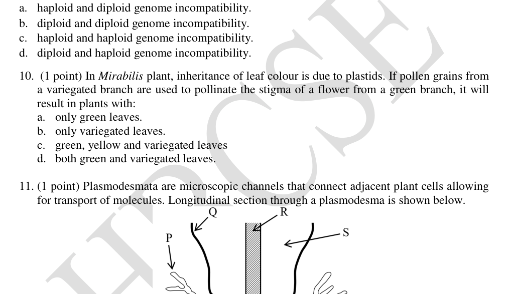
Longitudinal section through plasmodesmaTopic: Newtonian Mechanics, Modern-Quantum Physics Metodi: Physical Modeling, Dimensional Analysis Competenze: Diagrammatic Reasoning, Physical Reasoning Fonte: Testo (PDF) — p.5
Problema 12
(1 point) Marine sponges exhibit filter feeding wherein the water is taken into their body. The cells such as archaeocytes and choanocytes (collar cells) are instrumental in the process of digesting the ingested food. The waste is removed through the outward movement of water. Which of the following correctly depicts the sequence of events during the ingestion and digestion in a sponge?
(A) Food particles → Osculum → Archaeocytes → Choanocytes → Intracellular digestion → distributed to other cells of the body → Undigested food expelled through ostia (B) Food particles → Ostia → Archaeocytes → Choanocytes → Intracellular digestion → distributed to other cells of the body → Undigested food expelled through osculum (C) Food particles → Ostia → Choanocytes → Intracellular digestion → Archaeocytes → distributed to other cells of the body → Undigested food expelled through osculum (D) Food particles → Osculum → Choanocytes → Intracellular digestion → Archaeocytes → distributed to other cells of the body → Undigested food expelled through ostia
Topic: Fluid Mechanics, Newtonian Mechanics Metodi: Continuity Equation, Physical Modeling Competenze: Physical Reasoning, Diagrammatic Reasoning Fonte: Testo (PDF) — p.6
Problema 13
(1 point) Bones constitute a system of levers that are moved around joints by the muscles. Two representative figures are shown below (I and II).
The length ratio of the power arm and load arm determines whether a particular lever can exert a stronger force over a short distance or is better at translating force into large movements. Systems I and II in the human body with the load arm to power arm ratios of 2:1 and 5:1 are respectively found in:
(A) Arm and skull (B) Leg and arm (C) Hip and neck (D) Jaw and leg
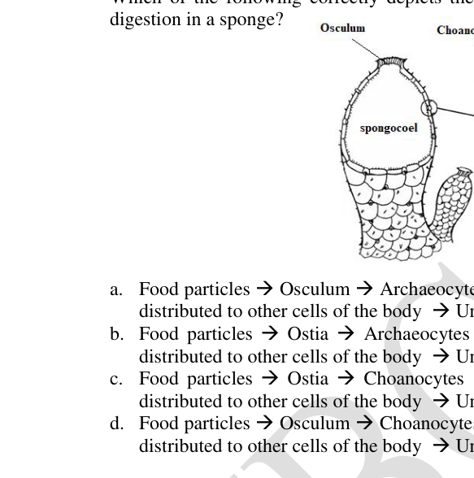
Lever system I in the body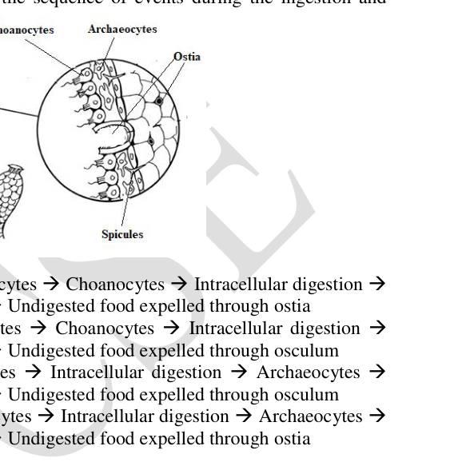
Lever system II in the bodyTopic: Newtonian Mechanics, Rigid Body Statics Metodi: Free-Body Diagram, Torque & Angular Momentum Analysis Competenze: Diagrammatic Reasoning, Physical Reasoning Fonte: Testo (PDF) — p.6
Problema 14
(1 point) The changes in the ventricular volume over a cardiac cycle in a healthy human are represented below.
Which of the following would represent the correct trend (relationship) in the aortic pressure (P), atrial pressure (Q) and ventricular pressure (R) at the start of left ventricular ejection of blood?
(A) R > P > Q (B) P > Q > R (C) P > R > Q (D) P = R > Q
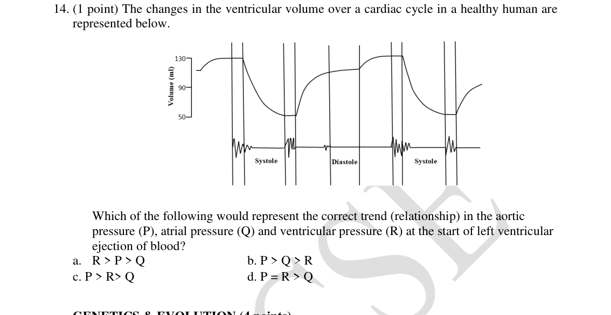
Ventricular volume vs cardiac cycle graphTopic: Fluid Mechanics, Oscillations & Waves Metodi: Experimental Data Analysis, Graph Linearization Competenze: Physical Reasoning, Experimental Data Analysis Fonte: Testo (PDF) — p.7
Problema 15
(1 point) TONPG is a compound which is toxic to E. coli. This is transported into the cell by lactose permease, the protein encoded by lac Y gene of the lactose operon. TONPG is not cleaved by β-galactosidase (encoded by lac Z gene). TONPG can be used to isolate mutants of the lactose operon. Which one of the following mutants can be isolated using TONPG?
(A) Mutants of lac Z, which do not make β-galactosidase. (B) Mutants of lac Y, which do not make permease. (C) Mutants of the lac I gene which do not make a functional repressor protein. (D) Constitutive mutants in the operator region of the lactose operon.
Topic: Modern-Quantum Physics Metodi: Physical Modeling, Symmetry Argument Competenze: Physical Reasoning, Mathematical Modeling Fonte: Testo (PDF) — p.7
Problema 16
(1 point) Two genotypes of a bacterial species, M and N, were found to grow at 10% (growth rate = 1.10) and 5% (growth rate = 1.05), respectively, per generation at 37°C in LB media. In an experiment, bacterial cells of each genotype were taken together in a flask and the growth was observed for 500 generations under non-limiting nutrient conditions at 37°C in LB media. Assuming no new mutations would arise during the experiment, which one of the following statements is true regarding this experiment?
(A) After 500 generations, the number cells corresponding to genotype M will be 2 times more than genotype N. (B) The frequency of genotype N decreases progressively and eventually; genotype M will approach 100% and genotype N will approach 0% of the total population. (C) Genotype M will never approach 100% and genotype N will never approach 0% as both genotypes exhibit positive growth rate of > 1. (D) The genotype proportions would stabilize after some generations and reach an equilibrium.
Topic: Kinetic Theory, Thermodynamics Metodi: Approximation & Series Expansion, Statistical Averaging Competenze: Mathematical Modeling, Physical Reasoning Fonte: Testo (PDF) — p.7
Problema 17
(1 point) The following figure shows how the wing span of a polyphemus moth species migrated/diversified to four unconnected geographies (P, Q, R, and S) respond to different environmental conditions they encounter during a year.
Which of them is/are example/s of microevolution? In the figure, continuous line represents the wing span size (in cm) distribution of the population. The dotted line represents the same observed after one year.
(A) P only (B) P and R only (C) Q, R and S only (D) Q and S only
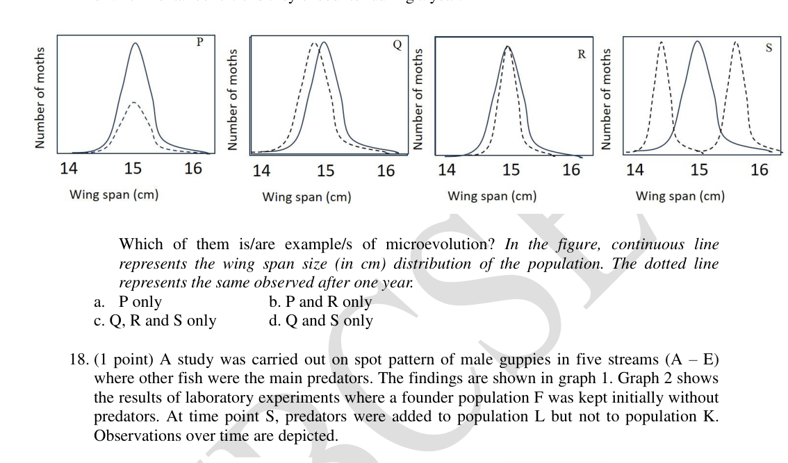
Wing span distribution shift P Q R STopic: Modern-Quantum Physics, Newtonian Mechanics Metodi: Experimental Data Analysis, Statistical Averaging Competenze: Physical Reasoning, Experimental Data Analysis Fonte: Testo (PDF) — p.8
Problema 18
(1 point) A study was carried out on spot pattern of male guppies in five streams (A – E) where other fish were the main predators. The findings are shown in graph 1. Graph 2 shows the results of laboratory experiments where a founder population F was kept initially without predators. At time point S, predators were added to population L but not to population K. Observations over time are depicted.
Which of the following can be deduced from the findings?
i. The variation in the spot pattern in the guppy population K and L is most likely the effect of age as observed in graph 2. ii. Both graphs indicate disruptive selection. iii. This is an example of counter selection against spot colour due to predation. iv. The result of the study supports directional selection.
Options: (A) i and iv only (B) i, ii and iii (C) iii and iv only (D) iv only
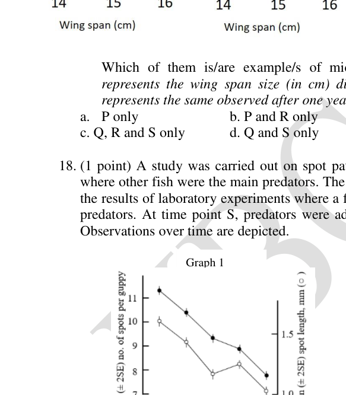
Spot pattern guppies stream Graph 1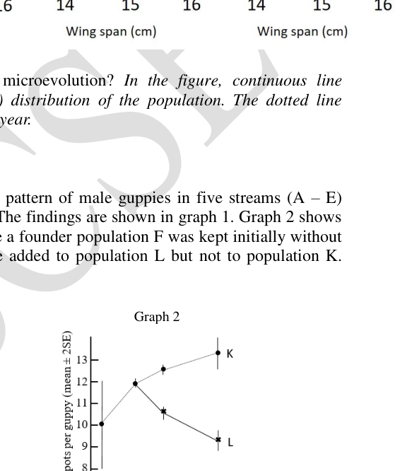
Population K L predation Graph 2Topic: Modern-Quantum Physics, Newtonian Mechanics Metodi: Experimental Data Analysis, Graph Linearization Competenze: Experimental Data Analysis, Physical Reasoning Fonte: Testo (PDF) — p.8
Problema 19
(1 point) Edge effects are changes in population or community structure that occur at the boundary between two habitats, also known as ecotone. Which of the following is/are correct about an ecotone?
i. Ecotone is the zone of minimal diversity of species. ii. Species completely different from the adjacent two habitats are likely to be found in ecotone. iii. If the ecotone is between a forest and an agricultural land, it is beneficial for forest due to influx of fertilizer chemicals. iv. An ecotone such as a wetland serves as a buffer by protecting adjacent ecosystems.
Options: (A) i and ii only (B) ii and iv only (C) iii only (D) ii, iii and iv only
Topic: Newtonian Mechanics, Thermodynamics Metodi: Physical Modeling, Statistical Averaging Competenze: Physical Reasoning, Mathematical Modeling Fonte: Testo (PDF) — p.9
Problema 20
(1 point) The seaweed flies, C. frigida and C. pilipes feed on brown seaweeds commonly found on rocky shores. Both these flies were grown in the laboratory and fed on brown seaweed. When grown independently and in the presence of each other, the following data was obtained.
The interaction between the two species is:
(A) Competitive exclusion (B) Intraspecific competition (C) Amensalism (D) Asymmetric competition
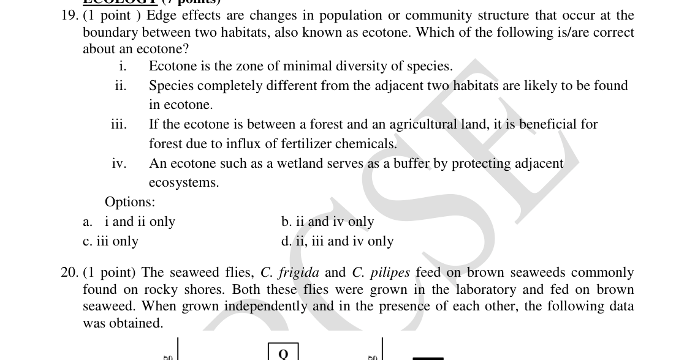
Seaweed flies growth data independent vs togetherTopic: Newtonian Mechanics, Kinetic Theory Metodi: Experimental Data Analysis, Statistical Averaging Competenze: Experimental Data Analysis, Physical Reasoning Fonte: Testo (PDF) — p.9
Problema 21
(1 point) If volcanic eruptions take place and a land becomes barren, the correct order of succession would be:
(A) Lichens → Bryophytes → Shrubs → Trees → Climax community. (B) Shrubs → Small trees → Bigger trees → Climax community. (C) Algae → Bryophytes → Shrubs → Climax community. (D) Lichens → Big trees → Climax community.
Topic: Thermodynamics, Newtonian Mechanics Metodi: Physical Modeling, Conservation of Energy Competenze: Physical Reasoning, Mathematical Modeling Fonte: Testo (PDF) — p.9
Problema 22
(1 point) The dry matter estimated at given instance is called a standing crop biomass. The lines P, Q, R and S in the figure below represent the changes over a year in abiotic factors namely nutrients, temperature and light as well standing crop of phytoplankton and zooplankton in a freshwater lake. Temperature is the only abiotic factor that is labeled.
Only during the period of May to July, standing crop biomass of producer and primary consumer forms an inverted pyramid. Which two lines represent phytoplankton and zooplankton respectively?
(A) R and P (B) R and S (C) Q and P (D) S and P
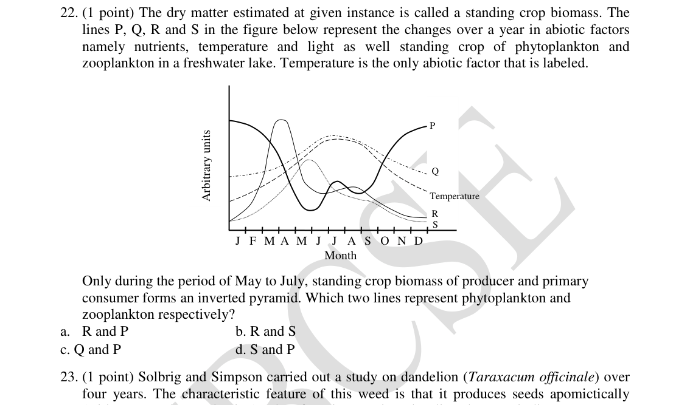
P Q R S annual curves freshwater lakeTopic: Thermodynamics, Oscillations & Waves Metodi: Experimental Data Analysis, Graph Linearization Competenze: Physical Reasoning, Experimental Data Analysis Fonte: Testo (PDF) — p.10
Problema 23
(1 point) Solbrig and Simpson carried out a study on dandelion (Taraxacum officinale) over four years. The characteristic feature of this weed is that it produces seeds apomictically (without sexual reproduction). Therefore, in any given locality, the genetic lines present are few and each lineage is a clone of one genetic type. They identified four genetic types, P, Q, R and S, on 3 grasslands situated close to each other. These grasslands were facing different amounts of disturbances. The following table shows different proportions of the four genetic lines present at each site.
| Habitat | P | Q | R | S |
|---|---|---|---|---|
| 1. Trampled, dry grassland mown every week, bare ground patches | 73 | 13 | 15 | 0 |
| 2. Moderately trampled, mown every week, in shade | 53 | 32 | 14 | 1 |
| 3. Wet, shaded, mown once a year | 17 | 8 | 11 | 64 |
Which genetic type of dandelions is most likely to be a K-selected population?
(A) P (B) Q (C) R (D) S
Topic: Newtonian Mechanics, Kinetic Theory Metodi: Statistical Averaging, Experimental Data Analysis Competenze: Mathematical Modeling, Physical Reasoning Fonte: Testo (PDF) — p.10
Problema 24
(1 point) A study on species diversity was carried out at Sulpaneshwar Wildlife Sanctuary (X), Jambughoda Wildlife Sanctuary (Y) and Purna Wildlife Sanctuary (Z). Species diversity is a collective function of species richness and evenness. A list of species and their abundance is given in table below. Arrange these different habitats in decreasing order of species diversity.
| Species | X | Y | Z |
|---|---|---|---|
| A | 10 | 12 | 10 |
| B | 30 | 6 | 10 |
| C | 6 | 18 | 10 |
| D | 8 | 0 | 10 |
| E | 10 | 8 | 10 |
| F | 11 | 10 | 0 |
| G | 1 | 3 | 10 |
(A) Habitat Y, Habitat Z and Habitat X (B) Habitat X, Habitat Y and Habitat Z (C) Habitat Z, Habitat Y and Habitat X (D) Habitat Y, Habitat X and Habitat Z
Topic: Kinetic Theory, Thermodynamics Metodi: Statistical Averaging, Dimensional Analysis Competenze: Mathematical Modeling, Physical Reasoning Fonte: Testo (PDF) — p.10
Problema 25
(1 point) Following triangle diagram represents environmental conditions and distinctive strategies or life histories among plants. Expansion for C: competitive, S: stress-tolerant and R: ruderal (growing on waste ground), C-S: stress tolerant competitors, C-R: Competitive ruderals and S-R: Stress tolerant ruderals. The percentage of the C-S-R for species X, Y and Z are given in table below. Classify species X, Y and Z. Select the most appropriate option.
| Species | C | R | S |
|---|---|---|---|
| X | 14 | 8 | 78 |
| Y | 25 | 65 | 10 |
| Z | 20 | 40 | 40 |
(A) X-Ruderal, Y-Stress-tolerant competitors and Z-Stress tolerant ruderals (B) X-Competitive, Y-Ruderal and Z-Competitive ruderals (C) X-Stress tolerant competitors, Y-Competitive and Z-Stress tolerant competitors (D) X-Stress tolerant competitors, Y-Competitive ruderals and Z-Stress tolerant ruderals
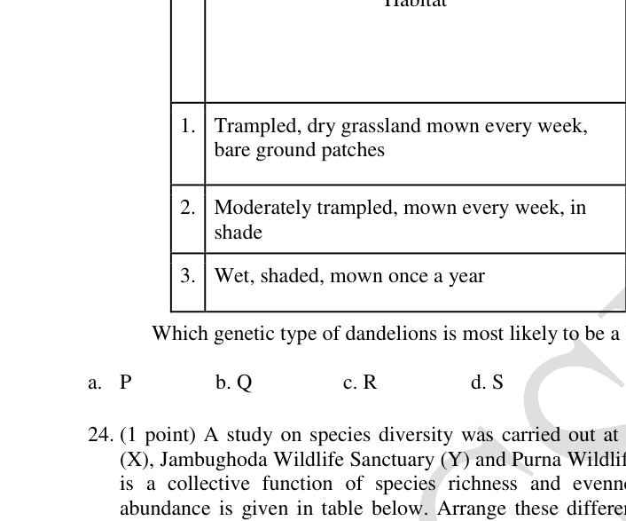
C-S-R triangle diagramTopic: Thermodynamics, Newtonian Mechanics Metodi: Statistical Averaging, Physical Modeling Competenze: Mathematical Modeling, Physical Reasoning Fonte: Testo (PDF) — p.11
Problema 26
(1 point) A group of scientists were studying the factors influencing winter flocks of small birds. The survival of birds in a flock is considered to be dependent on two main risks namely starvation and predation. The bird’s time budget is divided into three types of behaviours associated with these risks – scanning (for predators), feeding and fighting (for food). A graph depicting the three behaviours is shown in three curves I, II and III.
I, II and III respectively represent:
(A) fighting, feeding and scanning (B) scanning, feeding and fighting (C) fighting, scanning and feeding (D) feeding, fighting and scanning
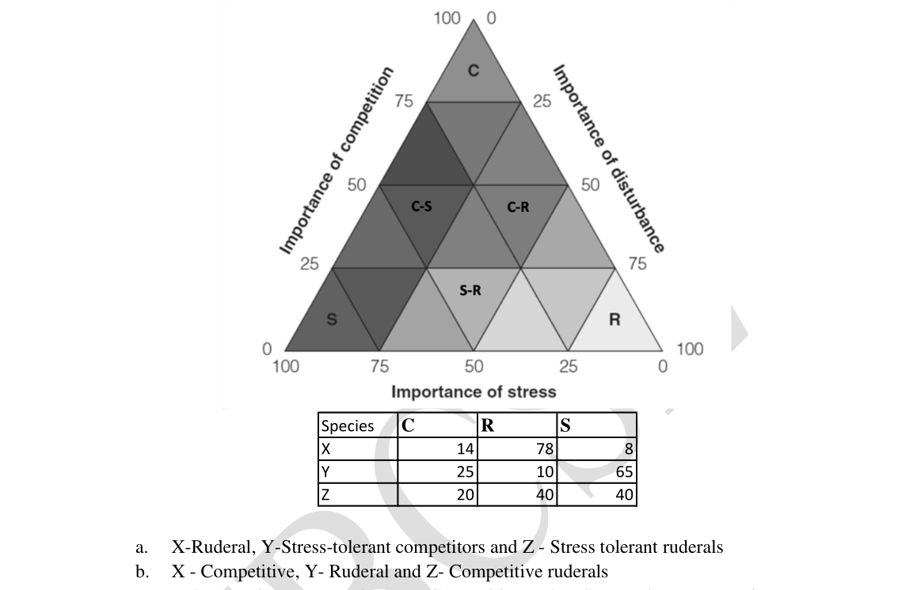
Time budget curves I II III flock sizeTopic: Newtonian Mechanics, Kinetic Theory Metodi: Experimental Data Analysis, Graph Linearization Competenze: Experimental Data Analysis, Physical Reasoning Fonte: Testo (PDF) — p.12
Problema 27
(1 point) Three traits for four phylogenetically different animals (P, Q, R and S) are shown.
| Animal | Egg size | Progeny | Parental care |
|---|---|---|---|
| P | ● | ● | |
| Q | ● | ||
| R | ● | ● ● | |
| S | ● | ● | ● |
P, Q, R and S respectively most likely are:
(A) mouse, chicken, zebrafish, honeybee (B) human, zebrafish, honeybee, chicken (C) zebrafish, frog, wasp, chicken (D) mouse, honeybee, zebrafish, human
Topic: Modern-Quantum Physics, Newtonian Mechanics Metodi: Physical Modeling, Statistical Averaging Competenze: Physical Reasoning, Diagrammatic Reasoning Fonte: Testo (PDF) — p.12
Problema 28
(2 points) Consider a protein with a molecular weight of 88 kDa. Calculate the molecular weight of the protein coding region of the corresponding mRNA. Assume the molecular weight of an amino acid to be 110 Da and the average molecular weight of a ribonucleotide residue to be 340 Da.
Note that the final answer for question will be given marks only if calculations are shown in the box given and the final answer is filled in the blank.
Topic: Modern-Quantum Physics, Kinetic Theory Metodi: Dimensional Analysis, Approximation & Series Expansion Competenze: Mathematical Modeling, Unit Conversion Fonte: Testo (PDF) — p.13
Problema 29
(2.5 points) HMG-CoA reductase is a key rate limiting enzyme in cholesterol biosynthetic pathway. The effect of cholesterol on HMG-CoA reductase was studied by feeding mice with control diet and to a separate group with cholesterol rich diet.
Part I. Total RNA was isolated and level of specific mRNA was measured by RT-PCR.
Part II. From the same experiment as described in Part I, proteins were also isolated and separated on SDS-PAGE and immunoblotted using specific antibodies against β-actin and HMG-CoA reductase. The result of the western blot is shown below.
Based on the above results, indicate whether each of the following statements is true, false or cannot be concluded by putting tick marks (✔) in the appropriate boxes.
a. Cholesterol feeding reduces the transcription of all genes in mice. b. Cholesterol feeding inhibits translation of all mRNA. c. Cholesterol feeding reduces the level of HMG-CoA reductase. d. Cholesterol feeding induces the degradation of HMG-CoA reductase. e. Cholesterol feeding inhibits translation of HMG-CoA reductase mRNA.
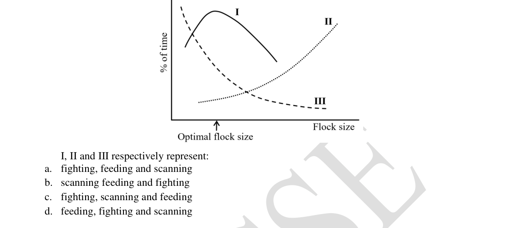
RT-PCR result control vs cholesterol diet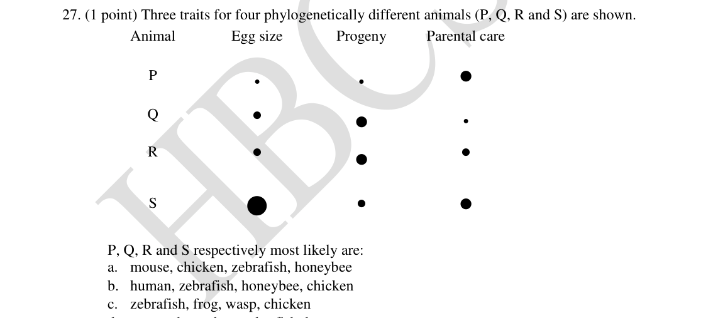
Western blot HMG-CoA reductase and β-actinTopic: Modern-Quantum Physics, Kinetic Theory Metodi: Experimental Data Analysis, Physical Modeling Competenze: Experimental Data Analysis, Physical Reasoning Fonte: Testo (PDF) — p.13
Problema 30
(2 points) In a hypothetical restriction mapping experiment, a sample of DNA was completely digested with two restriction enzymes EcoRI and HaeIII added to the same tube. DNA separation using agarose gel electrophoresis showed three bands of sizes 1.5 kb, 2.5 kb and 3.0 kb. Indicate whether each of the following is possible or not possible by putting tick marks (✔) in the appropriate boxes.
a. The sample is a 7 kb circular DNA with EcoRI and HaeIII having two unique sites each. b. The sample is a linear DNA with HaeIII having a site located at 5.5 kb from one end and an EcoRI site located at 2.5 kb from the other end. c. The sample is a linear DNA with EcoRI and HaeIII sites 1 kb apart. d. The sample is an 11 kb linear DNA with two unique EcoRI and HaeIII sites each.
Topic: Modern-Quantum Physics Metodi: Dimensional Analysis, Physical Modeling Competenze: Mathematical Modeling, Physical Reasoning Fonte: Testo (PDF) — p.14
Problema 31
(2 points) Consider the following:
I) Bacteriophage genome, bp long, was fragmented to obtain unique (nonrepeating) fragments of 500 bp length each. II) Bacterial DNA, bp long, was also fragmented to obtain unique (nonrepeating) fragments of 500 bp length each.
Equal quantity of each sample was denatured and allowed to re-associate separately under the same experimental conditions. During the re-association, the following parameters were tested:
i) S1 Nuclease digestion (specific for ssDNA) ii) Hypochromicity
At any point of time during the re-association: (Indicate whether each of the statement is true or false by putting tick marks (✔) in the appropriate boxes.)
a. ‘I’ will show higher nuclease digestion value than ‘II’. b. ‘II’ will show lower hypochromicity than ‘I’. c. Both ‘I’ and ‘II’ will show equal reduction in absorbance at 260 nm but different nuclease digestion values. d. Both ‘I’ and ‘II’ will show equal nuclease digestion values, but different absorbance values at 260 nm.
Topic: Modern-Quantum Physics, Wave Optics Metodi: Statistical Averaging, Approximation & Series Expansion Competenze: Mathematical Modeling, Physical Reasoning Fonte: Testo (PDF) — p.14
Problema 32
(3 points) Following is a cartoon depicting a protein structure:
Here C, S, N and Y represent Cysteine, Serine, Asparagine and Tyrosine respectively. Place tick marks (✔) in the appropriate boxes to indicate the correct options for each of the question A – C. (Note: Only a completely correct row will be given points.)
(A) Location of the protein (B) Likely site of phosphorylation (C) Likely site of glycosylation
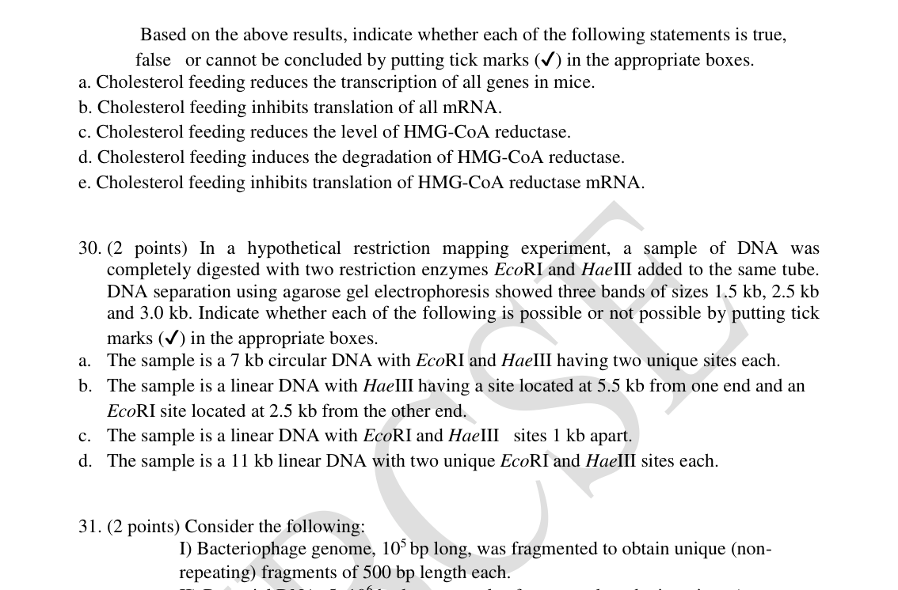
Cartoon protein structure C S N Y residuesTopic: Modern-Quantum Physics Metodi: Physical Modeling, Symmetry Argument Competenze: Diagrammatic Reasoning, Physical Reasoning Fonte: Testo (PDF) — p.15
Problema 33
(2.5 points) Two bacterial species, P and Q, when analysed for the membrane lipid composition, revealed the following results (Graph I).
When cells were cultured at 37°C and then shifted either to 15°C or 42°C temperatures, the data for colony-forming units (CFUs) obtained is depicted in Graph II. (CFU is a measure of number of viable bacteria in a sample.)
Indicate whether each of the following interpretation is correct or incorrect by putting tick marks (✔) in the appropriate boxes.
a. Fatty acids of lower molecular weight are likely to impart more fluidity to the membrane. b. Unsaturated fatty acids are likely to provide more fluidity to the membrane that is required for cells to grow at higher temperatures. c. Culture P performs better at lower temperature as it has greater energy storage in the form of fatty acids. d. Membrane of bacteria P with more fluidity is likely to outperform Q at all temperatures. e. Weaker hydrogen bonding and increased membrane permeability will be observed in organism P at higher temperatures.
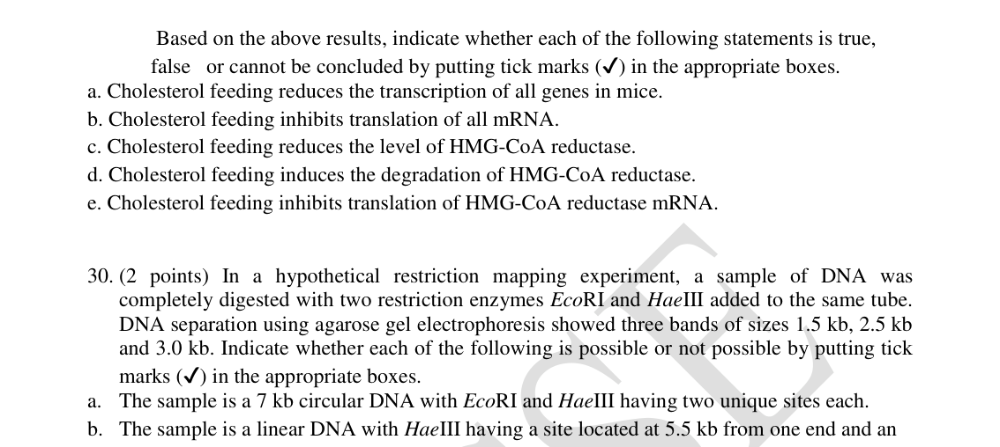
Membrane lipid composition Graph I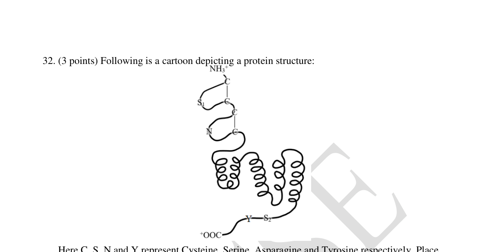
CFU at 15°C and 42°C Graph IITopic: Thermodynamics, Kinetic Theory Metodi: Experimental Data Analysis, Graph Linearization Competenze: Experimental Data Analysis, Physical Reasoning Fonte: Testo (PDF) — p.15
Problema 34
(2 points) A geneticist was studying the cell cycle in the root tip cells of a plant. She microscopically observed that 15 cells were in prophase, 7 cells were in prometaphase, 8 cells were in metaphase, 7 were in anaphase, 5 were in telophase and 88 were in interphase. The overall cell cycle for this particular species was recorded to be 23 hours. The time span that the cells are in the mitotic phase is:
Note that the final answer for the question will be given marks only if calculations are shown in the box given and the final answer is filled in the blank.
Topic: Kinetic Theory, Modern-Quantum Physics Metodi: Dimensional Analysis, Statistical Averaging Competenze: Mathematical Modeling, Physical Reasoning Fonte: Testo (PDF) — p.16
Problema 35
(2 points) Arachidonic acid is a 20-carbon polyunsaturated fatty acid (20:4 all cis 5,8,11,14-eicosatetraenoic acid). It is found in the membrane and during inflammatory stimulus, it is released by the action of phospholipase A2. It acts as a precursor for prostaglandins and leukotrienes through the catalytic action of cyclooxygenases.
Indicate whether each of the following statements regarding arachidonic acids is true or false by putting tick marks (✔) in the appropriate boxes.
a. It contributes to the fluidity of the membrane. b. It acquires a U-shaped structure. c. Its structure is favourable for cyclization catalyzed by cyclooxygenases. d. The redness and swelling at the site of inflammation is reduced by prostaglandins.
Topic: Thermodynamics, Modern-Quantum Physics Metodi: Physical Modeling, Approximation & Series Expansion Competenze: Physical Reasoning, Mathematical Modeling Fonte: Testo (PDF) — p.17
Problema 36
(2 points) There are two gardens – one in city A and the other in city B. Both these gardens had plant species X and Y. While the garden in city A had butterflies, that in city B did not have any insects or birds. The plant species X in the garden of city A set fruits successfully, whereas the plants of the same species in the garden of city B did not set any fruits. Interestingly, plants of species Y set fruits successfully in both the gardens of city A and B.
Based on this observation, the types of flowers of the plant species X and Y were interpreted as follows:
i. X = Dioecious, Y = Hermaphrodite ii. X = Monoecious, Y = Dioecious iii. X = Hermaphrodite, Y = Unisexual iv. X = Dioecious, Y = Monoecious
Choose the correct option and put a tick mark (✔) in the appropriate box.
(A) iii only (B) i and iv (C) i and iii (D) ii and iii
Topic: Modern-Quantum Physics, Newtonian Mechanics Metodi: Physical Modeling, Symmetry Argument Competenze: Physical Reasoning, Mathematical Modeling Fonte: Testo (PDF) — p.18
Problema 37
(2 points) A flower that lacks any of the four whorls is described as an incomplete flower. If any of the whorls essential for reproduction is/are missing, it is described as an imperfect flower. In some members of the cucumber family, plants growing in a poor environment produce imperfect flowers while those growing in a good (resource-rich) environment can produce both imperfect or perfect flowers.
Indicate whether each of the following is correct or incorrect by putting tick marks (✔) in the appropriate boxes.
a. A flower that is incomplete is also imperfect. b. A flower lacking calyx and corolla both can be described as perfect. c. The cucumber plant growing in poor conditions is likely to produce staminate flowers. d. The imperfect flowers produced by cucumber plants in good conditions are likely to be carpellate flowers.
Topic: Modern-Quantum Physics, Thermodynamics Metodi: Physical Modeling, Symmetry Argument Competenze: Physical Reasoning, Diagrammatic Reasoning Fonte: Testo (PDF) — p.18
Problema 38
(2 points) Diagrammatic representations of part of a mitochondrion and a chloroplast depicting the locations of H-ATPase are shown in figures I and II respectively.
What do M, N, O and P in the figures represent? (Choose from the options below and fill in the blanks with the respective alphabet.)
Options: a. Granum b. Lamellae c. Stroma d. Cristae e. Intermembrane space f. Thylakoid membrane g. Matrix h. Outer membrane i. Inner membrane j. Lumen
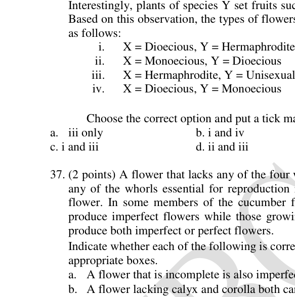
Mitochondrion M N with H+-ATPase Figure I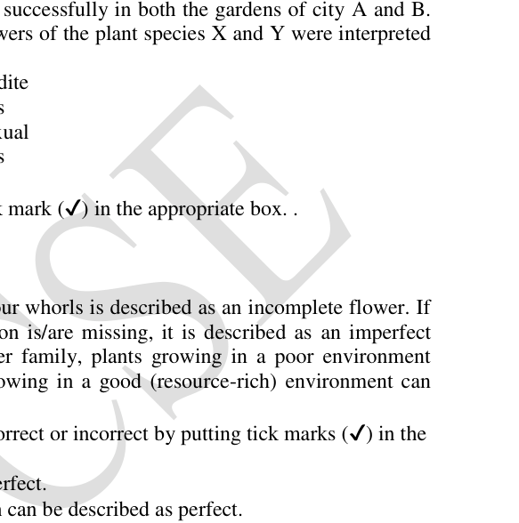
Chloroplast O P with H+-ATPase Figure IITopic: Thermodynamics, Modern-Quantum Physics Metodi: Physical Modeling, Energy Conservation Method Competenze: Diagrammatic Reasoning, Physical Reasoning Fonte: Testo (PDF) — p.18
Problema 39
(4 points) The following is a description of seven types of flowers.
i) Flowers with conspicuous yellow-pigmented nectar guide ii) Nocturnal nectar-producing flowers iii) Large, pale-coloured flowers iv) Flowers with strong fragrance v) Large flowers with bell-shaped concave structures of petals lacking in colours vi) Inconspicuous flower with feathery stigma vii) Flowers having brightly-coloured petals with nectar but lacking fragrance
Based on their characteristics, assign the type/s of flower/s (i – vii) that is/are likely to be pollinated by each of the agent listed in the table. Indicate your answers by filling the number/s of flower type (i – vii) against each agent. (Note: only a completely correct row will be given points.)
Topic: Newtonian Mechanics, Modern-Quantum Physics Metodi: Physical Modeling, Statistical Averaging Competenze: Physical Reasoning, Diagrammatic Reasoning Fonte: Testo (PDF) — p.19
Problema 40
(3.5 points) Consider two flaccid plant cells P and Q with solute potentials MPa and MPa respectively. These cells were immersed in separate beakers each containing 0.2 M sucrose solution ( MPa), then answer the following questions.
(A) Complete the table with the values of solute, water and pressure potentials of the cells P and Q after immersion. Express the values in MPa, up to three decimal places. (Only a completely correct row will get points)
(B) What would be the difference in the pressure potentials of the two cells at equilibrium after immersion in the sucrose solution?
(C) If cells P and Q are now placed next to each other, then the movement of water will be:
(A) P → Q (B) Q → P (C) No net movement
Topic: Thermodynamics, Fluid Mechanics Metodi: Conservation of Energy, Hydrostatic Equilibrium Competenze: Mathematical Modeling, Physical Reasoning Fonte: Testo (PDF) — p.19
Problema 41
(4 points) During exercise, the cardiovascular and respiratory systems work together to deliver oxygen to the muscles and remove carbon dioxide. Consider the following data for an individual during moderate exercise:
- Heart rate (HR): 150 beats per minute (bpm)
- Stroke volume (SV): 80 mL/beat
- Oxygen consumption by tissues per litre of blood (): 180 mL O/L
- Tidal volume (): 600 mL
- Respiratory rate (RR): 20 breaths/min
- Alveolar ventilation: 80%
(A) Calculate the total amount of oxygen delivered to the tissues per minute (in mL O/min). Note that the final answer for this part of the question will be given marks only if calculations are shown in the box given and the final answer is filled in the blank.
(B) Calculate the alveolar ventilation in mL/min. Note that the final answer for this part of the question will be given marks only if calculations are shown in the box given and the final answer is filled in the blank.
Topic: Fluid Mechanics, Thermodynamics Metodi: Continuity Equation, Dimensional Analysis Competenze: Mathematical Modeling, Unit Conversion Fonte: Testo (PDF) — p.19
Problema 42
(2 points) The changes in the breathing rate in response to changes in CO and O levels in inhaled air for dogs is shown in Figure I.
In related respiratory physiology experiments, dogs were prepared for measuring their respiratory rate (L/min) and they were trained to run on a treadmill. Blood samples were taken for measurement of CO levels.
Experiment 1: Dog runs on the treadmill set at two different speeds. The respiratory rate is plotted as a function of arterial CO concentration.
Experiment 2: Dog runs on the treadmill at the same speed, but the slope of the treadmill is elevated, increasing the work load.
Based on the given data, indicate whether each of the following statements is correct or incorrect by putting tick marks (✔) in the appropriate boxes.
a. Experiment 1 suggests that the rising levels of CO in the blood during exercise is the feedback signal that stimulates the increase in respiratory rate. b. Arterial levels of CO are the metabolic signals that regulate respiration in response to work load. c. Breathing is more sensitive to increased CO content in inhaled air than to the decreased O content. d. Breathing rate shows a continuous inverse trend in relation to the O content of inhaled air at all levels.
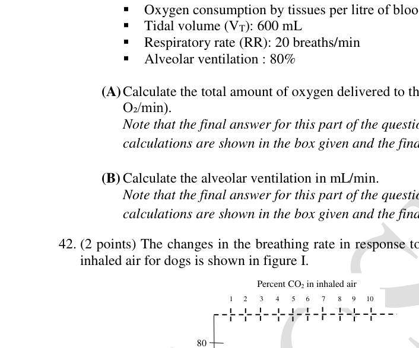
Breathing rate vs CO2 and O2 Figure I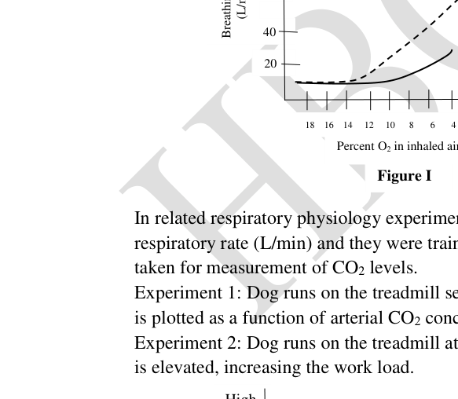
Respiratory rate vs arterial CO2 Experiment 1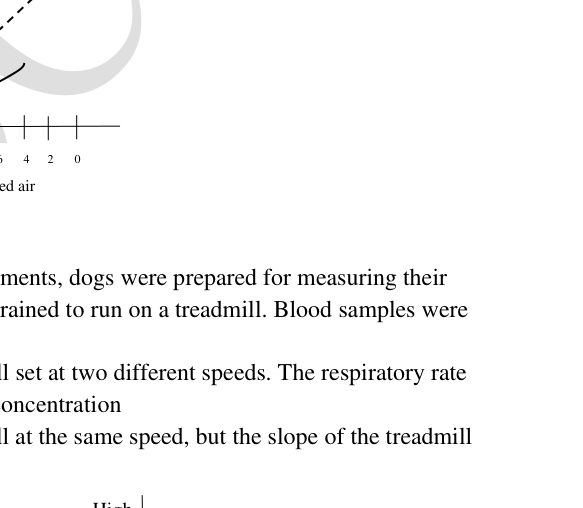
Respiratory rate vs treadmill slope Experiment 2Topic: Fluid Mechanics, Thermodynamics, Kinetic Theory Metodi: Experimental Data Analysis, Graph Linearization Competenze: Experimental Data Analysis, Physical Reasoning Fonte: Testo (PDF) — p.20
Problema 43
(2 points) A comparison of the total oxygen stores in various parts of the body for five species of marine mammals and human are shown in the bar graphs. The animals are as follows:
- Humans (H)
- Otariid seals such as Northern fur seal (I) and Steller sea lion (J) that dive for short periods of time at moderate depths.
- True seals such as Harbor seal (K), Ribbon seal (L) and Weddell seal (M) that dive for relatively long periods at much greater depths.
1, 2, 3 and 4 most likely respectively represent oxygen stores in which of the following parts? Choose the correct option and put a tick mark (✔) in the appropriate box.
(A) Blood; lungs; body fluids other than blood; myoglobin (B) Myoglobin; lungs; body fluids other than blood; blood (C) Lungs; blood; myoglobin; body fluids other than blood (D) Myoglobin; lungs; blood; body fluids other than blood
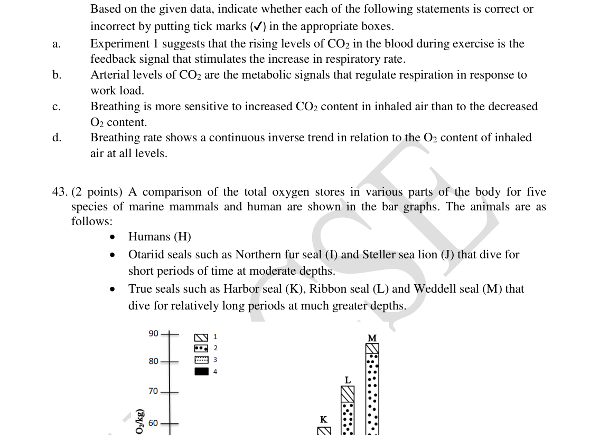
Oxygen stores bar graph H I J K L M speciesTopic: Fluid Mechanics, Thermodynamics Metodi: Experimental Data Analysis, Statistical Averaging Competenze: Experimental Data Analysis, Physical Reasoning Fonte: Testo (PDF) — p.21
Problema 44
(3 points) The osmotic pressure of blood plasma as a function of the ambient osmotic pressure for three species of marine invertebrates namely the blue mussel, the green crab and a species of grass shrimp is shown in the graph. The thin solid line is a line of equality between blood osmotic pressure and ambient osmotic pressure.
Based on the graph, choose from the list of options regarding the type of animal and fill in the respective blanks with the correct option number. Only a completely correct answer for each blank will be awarded points.
Options: (i) Short range conformer (ii) Strict osmotic conformer (iii) Conformer at only high ambient osmotic pressure (iv) Conformer at only lower ambient osmotic pressure (v) Regulator at only high ambient osmotic pressure (vi) Regulator at only lower ambient osmotic pressure (vii) Homeotherm (viii) Wide range regulator
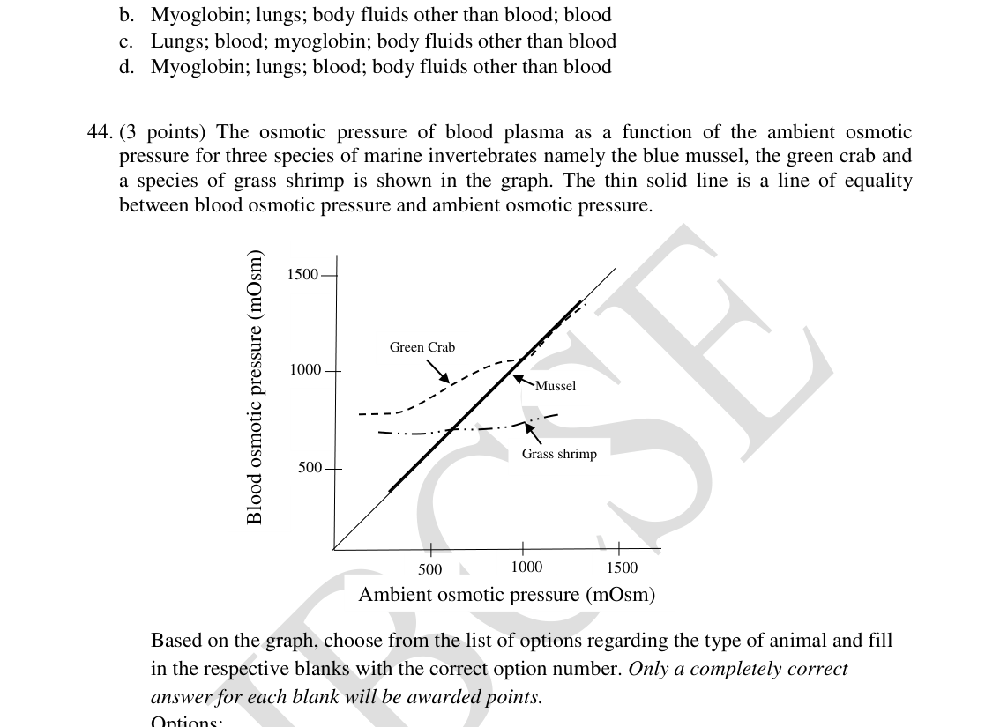
Blood vs ambient osmotic pressure green crab mussel shrimpTopic: Fluid Mechanics, Thermodynamics Metodi: Experimental Data Analysis, Graph Linearization Competenze: Physical Reasoning, Experimental Data Analysis Fonte: Testo (PDF) — p.22
Problema 45
(2 points) Sex determination in the Indian blue peafowl (Pavo cristatus) follows the ZZ-ZW pattern wherein the blue peafowl is ZW and the male is ZZ. The cameo plumage which produces brown feathers results from a Z-linked allele () that is recessive to the wild-type blue allele (). Consider the following crosses (I) Female with blue plumage crossed with a cameo male (II) Cameo female crossed with blue homozygous male.
Mark whether each of the following is true or false by putting tick marks (✔) in the appropriate boxes.
a. All the F1 females in cross I will be cameo while 50% of the male progeny will have blue plumage. b. Of the F2 females of cross I, 50% will have blue plumage and 50% will be cameo. c. The proportion of blue males in the F1 generation of both crosses I and II is identical. d. The F2 progeny of cross II will have blue females, blue males and cameo females in the ratio 1:2:1 respectively.
Topic: Modern-Quantum Physics, Newtonian Mechanics Metodi: Statistical Averaging, Physical Modeling Competenze: Mathematical Modeling, Physical Reasoning Fonte: Testo (PDF) — p.22
Problema 46
(2 points) A pedigree representing the transmission of brachydactyly (short fingers) in a family is shown below. Persons with short fingers are indicated by filled circles (females) and filled squares (males). None of the grandparents of generation II is a carrier for the trait.
(A) The mode of inheritance of the trait is: Choose the correct option and put a tick mark (✔) in the appropriate box.
Options: a. X-linked recessive b. X-linked dominant c. Autosomal recessive d. Autosomal dominant
(B) What is the probability (%) that II-6 is heterozygous for the trait? (C) What is the probability (%) that III-1 is heterozygous for the trait? (D) If II-3 and II-4 have another biological child, then what is the probability (%) of that child being a daughter with brachydactyly?
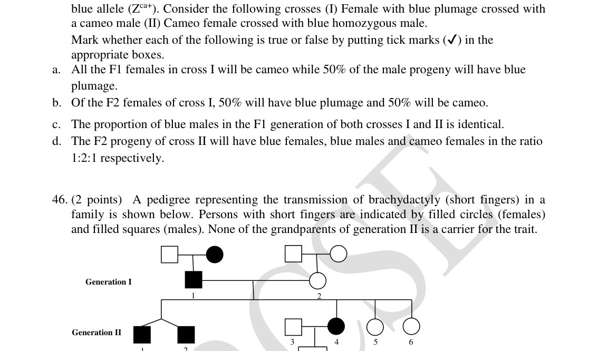
Pedigree brachydactyly three generationsTopic: Modern-Quantum Physics Metodi: Statistical Averaging, Physical Modeling Competenze: Mathematical Modeling, Physical Reasoning Fonte: Testo (PDF) — p.23
Problema 47
(2 points) Albinism in humans is inherited as an autosomal recessive trait. Calculate the probability of a couple (both heterozygous for the trait) having three children – one with normal pigmentation and two with albinism.
Note that the final answer for this question will be given marks only if calculations are shown in the box given and the final answer is filled in the blank.
Topic: Modern-Quantum Physics, Kinetic Theory Metodi: Statistical Averaging, Dimensional Analysis Competenze: Mathematical Modeling, Physical Reasoning Fonte: Testo (PDF) — p.23
Problema 48
(2 points) Following are four sequences taken from HIV RNA such that:
I: Victim who got infected with HIV after blood transfusion II: Suspect 1 HIV patient whose blood was suspected to be transfused in the victim III: Suspect 2 HIV patient whose blood was suspected to be transfused in the victim IV: Unrelated person infected with HIV
I: G T G C T T C A C C G A C G C C C C G C G II: A A G C T T C A C C G G C G C T C C A C A III: G T G C T T C A C C G A C G C T C C A C A IV: A A G C T T C A T A G G A G C T T C A A A
Indicate whether each of the following is correct or incorrect by putting tick marks (✔) in the appropriate boxes.
a. In the above sequence of 21 nucleotides, only 4 nucleotides can provide information about the possible culprit. b. Of the 21 nucleotides, 5 nucleotides indicate that the unrelated person can be considered as an outgroup. c. The RNA virus has continued to evolve in the suspects as well as the victim even after the victim was infected. d. A total of 10 nucleotides in the sequence provide no information about the outgroup or the possible suspects.
Topic: Modern-Quantum Physics, Nuclear & Particle Physics Metodi: Physical Modeling, Statistical Averaging Competenze: Mathematical Modeling, Physical Reasoning Fonte: Testo (PDF) — p.23
Problema 49
(3 points) In a genetic study involving corn (Zea mays), three genes, gene a, b, and c are located on the same chromosome. A geneticist performs a three-point test cross to determine the distances between these genes. The following data shows the number of offspring with different genotypes:
| Genotypes | Number of offspring |
|---|---|
| 180 | |
| 175 | |
| 55 | |
| 50 | |
| 15 | |
| 20 | |
| 3 | |
| 2 |
Construct the genetic map involving genes a, b, and c indicating the correct order and genetic distance in centimorgans (cM) and draw the map in the given box. Only a completely correct map will be given points.
Topic: Modern-Quantum Physics, Newtonian Mechanics Metodi: Statistical Averaging, Dimensional Analysis Competenze: Mathematical Modeling, Physical Reasoning Fonte: Testo (PDF) — p.24
Problema 50
(2 points) In order to study how populations of species can invade communities from which they are previously absent, several attempts have been made by ecologists to establish different species of birds to new habitats/islands. Colonization success of birds into these habitats depends on several factors. Indicate whether each of the following factors has a positive effect or not on the success rate of colonization by putting tick marks (✔) in the appropriate boxes.
a. The number of release attempts. b. Repeated releases at one or a few sites as compared to releases at many different sites. c. Species with greater natality to mortality ratio. d. Migratory life history of birds that cover large distances between summer and winter quarters.
Topic: Newtonian Mechanics, Kinetic Theory Metodi: Statistical Averaging, Physical Modeling Competenze: Physical Reasoning, Mathematical Modeling Fonte: Testo (PDF) — p.24
Problema 51
(3 points) The entire spectrum of electromagnetic radiation is shown below.
A few biologically important properties are listed below. Assign the correct range/s of the spectrum to each of them and fill in the blanks with the respective alphabet/s (P to W).
a. Floral induction b. Both heat and human vision c. Germicidal
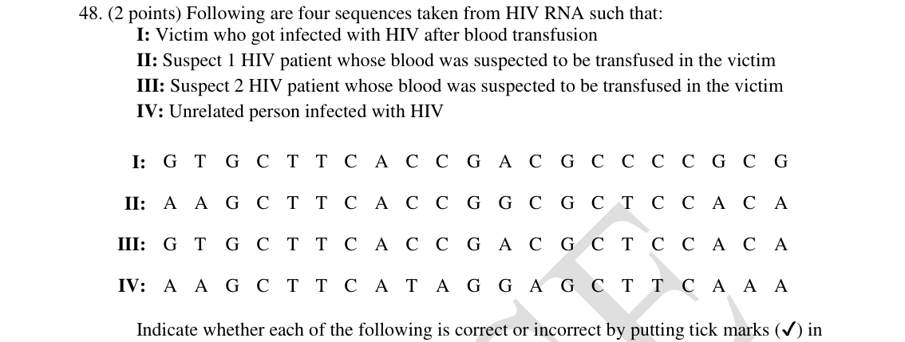
Full electromagnetic spectrum P to W bandsTopic: Oscillations & Waves, Wave Optics Metodi: Physical Modeling, Superposition Principle Competenze: Physical Reasoning, Diagrammatic Reasoning Fonte: Testo (PDF) — p.24
Problema 52
(2 points) Figure shows the age distribution for human population for the country X.
Indicate whether each of the following is true or false by putting tick marks (✔) in the appropriate boxes.
a. The age distribution indicates equal birth and death rate for this population. b. The individuals in the populations were producing just enough offspring to approximately replace losses due to death. c. The age pyramid indicates expanding population. d. Under ideal conditions, the population of the reproductive stage will double in 10 years.
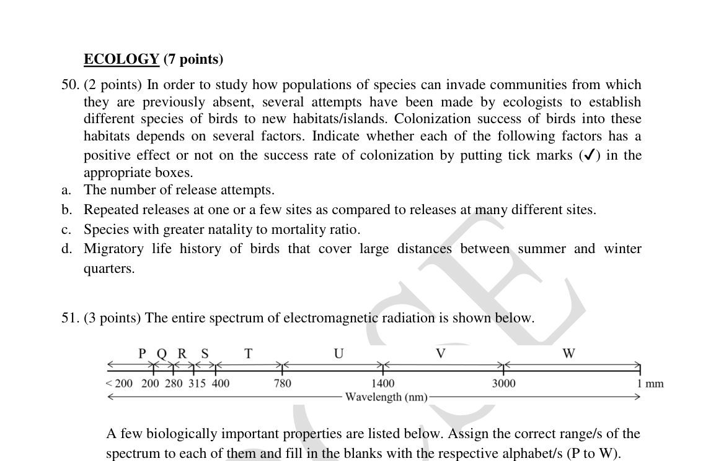
Age distribution pyramid country XTopic: Newtonian Mechanics, Kinetic Theory Metodi: Statistical Averaging, Experimental Data Analysis Competenze: Mathematical Modeling, Physical Reasoning Fonte: Testo (PDF) — p.25
Problema 53
(4.5 points) In colonies of eusocial insects such as bees, although the workers never mate, they are able to lay unfertilized eggs which, being haploid develop into drones. If in a colony where the queen mates only once, predict the preference of the various members for other members with respect to the following conditions:
(i) Queen’s preference for her daughter’s sons versus her own sons. (ii) Non egg laying worker’s preference for their sister’s sons versus their own brothers. (iii) Egg-laying worker’s preference for her brothers versus their own sons.
Complete the table by filling in the respective values of genetic relatedness (r) for the relationships 1 and 2 in each condition (i, ii and iii) and also indicate the preference by inserting the appropriate symbol (>, < or =).
Topic: Modern-Quantum Physics, Kinetic Theory Metodi: Statistical Averaging, Physical Modeling Competenze: Mathematical Modeling, Physical Reasoning Fonte: Testo (PDF) — p.25
Problema 54
(2 points) Studies on the copulatory receptivity of Anolis lizards were carried out during the breeding season in these lizards. The figure depicts the physiological and behavioural observations during the reproductive season of female Anolis. These lizards lay shelled fertilized eggs, which hatch into young ones.
Indicate whether each of the following is true or false by putting tick marks (✔) in the appropriate boxes.
a. A female is uniformly receptive to territorial males throughout the breeding season. b. Fertilization is only possible for the egg that is released from the right ovary due to the differential response of the female to copulation. c. A female lizard lays eggs one at a time every 12–16 days. d. Female receptivity is coordinated with egg laying to maximise the chances of fertilization.
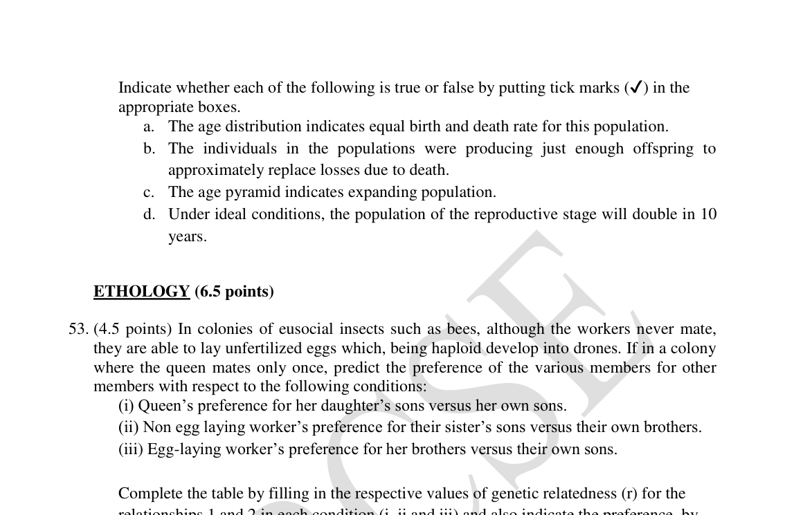
Anolis female reproductive season physiologyTopic: Oscillations & Waves, Modern-Quantum Physics Metodi: Experimental Data Analysis, Graph Linearization Competenze: Physical Reasoning, Experimental Data Analysis Fonte: Testo (PDF) — p.26
Problema 55
(2 points) A few statements about various vertebrate clades are made. Indicate whether each of the following is true or false by putting tick marks (✔) in the appropriate boxes.
a. Horses and monkeys can be placed in a monophyletic clade of placental mammals. b. Marsupials and placental mammals can be placed in a monophyletic clade of Mammalia. c. Monophyletic clade of Amniota includes monotremes and reptiles. d. Monophyletic clade of therians consists of primates and ungulates only.
Topic: Modern-Quantum Physics, Newtonian Mechanics Metodi: Physical Modeling, Symmetry Argument Competenze: Physical Reasoning, Diagrammatic Reasoning Fonte: Testo (PDF) — p.26
Problema 56
(4 points) A classification of animals is shown below with important evolutionary traits. Place the given phyla against the appropriate alphabet.
Indicate the position of the following phyla (1–4) in the cladogram and fill in the respective alphabet (P–W) in the blanks.
- Echinoderms
- Mollusks
- Roundworms
- Arthropods
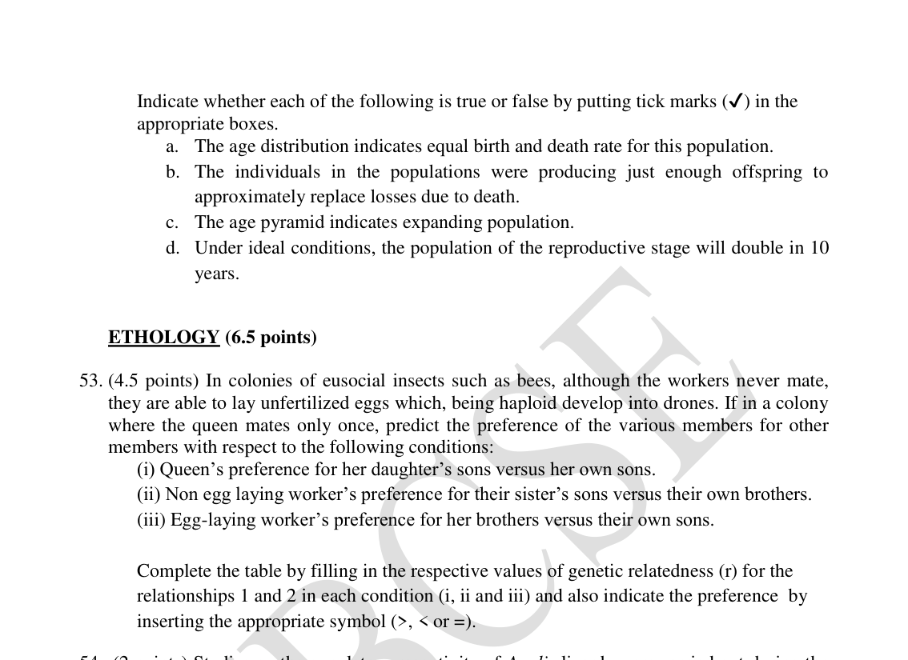
Cladogram animal phyla P to W positionsTopic: Modern-Quantum Physics, Newtonian Mechanics Metodi: Physical Modeling, Symmetry Argument Competenze: Diagrammatic Reasoning, Physical Reasoning Fonte: Testo (PDF) — p.26